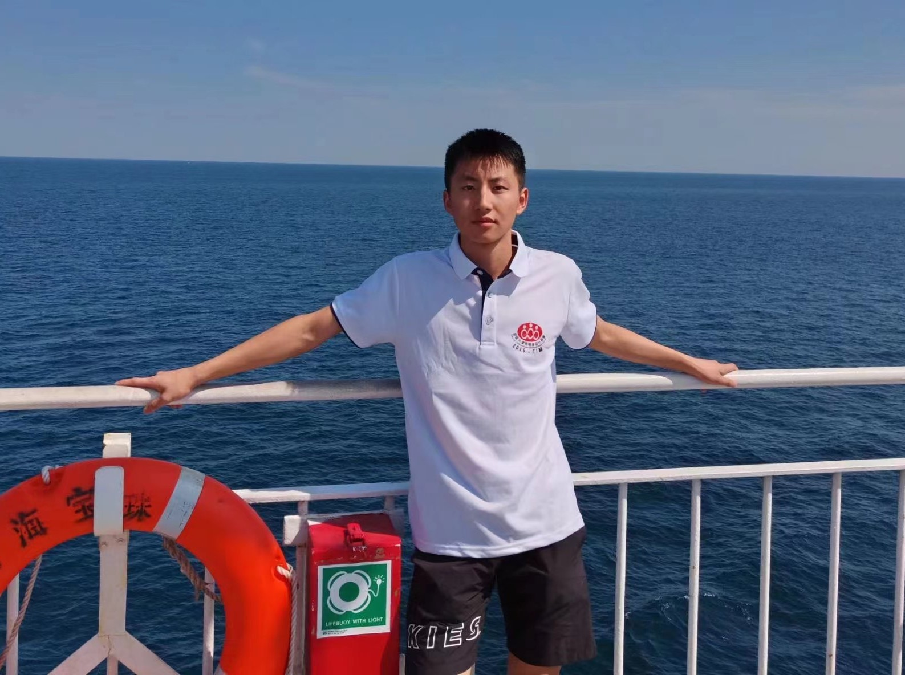

Keyu YanM.S. student
Huangshan Road, |
 |
| Memory-augmented Deep Unfolding Network for Guided Image Super-resolution. [Code] Man Zhou,Keyu Yan (co-first author), Jinshan Pan, Wenqi Ren, Qi Xie, Xiangyong Cao International Journal of Computer Vision ( IJCV ), 2022. |
| Panchromatic and Multispectral Image Fusion via Alternating Reverse Filtering Network. [Code] Keyu Yan, Man Zhou, Jie Huang, Chengjun Xie, Feng Zhao, Chongyi Li, Danfeng Hong Advances in Neural Information Processing Systems ( NeurIPS Spotlight 2%), 2022. |
| Deep Fourier-based Exposure Correction Network with Spatial-Frequency Interaction. [Code] Jie Huang, Yajing Liu, Man Zhou, Keyu Yan, Jinghao Zhang, Yukun Huang, Feng Zhao, Zhiwei Xiong. European Conference on Computer Vision ( ECCV Oral 2%), 2022. |
| Memory-Augmented Model-Driven Network for Pansharpening. [Code] Keyu Yan, Man Zhou, Li Zhang, Chengjun Xie. European Conference on Computer Vision ( ECCV ), 2022. |
| Spatial-Frequency Domain Information Integration for Pan-sharpening. [Code] Man Zhou, Jie Huang, Keyu Yan, Hu Yu, Xueyang Fu, Aiping Liu, Xian Wei, Feng Zhao European Conference on Computer Vision ( ECCV ), 2022. |
| Adaptively Learning Low-high Frequency Information Integration for Pan-sharpening. [Code] Man Zhou,Jie Huang, Chongyi Li, Hu Yu, Keyu Yu, Naishan Zheng, Feng Zhao ACM International Conference on Multimedia ( ACM MM ), 2022. |
| Normalization-based Feature Selection and Restitution for Pan-sharpening. [Code] Man Zhou, Jie Huang, Keyu Yan, Gang Yang, Aiping Liu, Chongyi Li, Feng Zhao. ACM International Conference on Multimedia ( ACM MM ), 2022. |
| Mutual Information-driven Pan-sharpening. [Code] Man Zhou, Keyu Yan (co-first author), Xueyang Fu, Jie Huang, Zihe Yang, Feng Zhao. IEEE Conference on Computer Vision and Pattern Recognition ( CVPR ), 2022. |
| Memory-augmented Deep Conditional Unfolding Network for Pan-sharpening. [Code] Gang Yang, Man Zhou, Keyu Yan, Yajing Liu, Mingde Yao, Feng Zhao, Zhiwei Xiong. IEEE Conference on Computer Vision and Pattern Recognition ( CVPR), 2022. |
| When Pan-sharpening Meets Graph Convolution Network and Knowledge Distillation. [Code] Keyu Yan, Man Zhou, Liu Liu, Chengjun Xie, Danfeng Hong. IEEE Transactions on Geoscience and Remote Sensing ( TGRS ), 2022. |
| PAN-guided band-aware multi-spectral feature enhancement for Pan-sharpening. [Code] Man Zhou, Keyu Yan (co-first author), Xueyang Fu, Aiping Liu, Chengjun Xie. IEEE Transactions on Computational Imaging ( T-CI). |